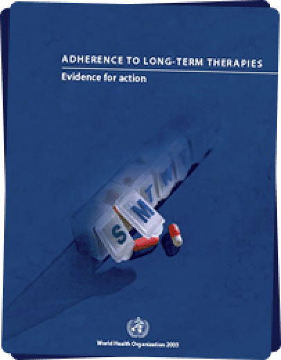

<section class="closing-section">

  <div class="container -md-width">
  
    <h2 class="lg-title">In Closing</h2>

    <p class="sm-sans-serif-text -blue">Our concept, Florence, attempts to address significant causes of non-adherence from a patient’s perspective, and through the use of technology.</p>

    <p class="sm-sans-serif-text -blue">The problem of non-adherence, however is broader than those factors. This problem needs to be approached from multiple dimensions: socio-economic, education, healthcare access, and treatment models—to name a few. Technology is just one means of attack, not the only one.</p>

    <figure class="closing-section__figure">
      
    </figure>

    <p class="sm-sans-serif-text -blue">If you’re interested in learning more about this problem, we encourage you to read the <a class="underline" href="https://www.who.int/chp/knowledge/publications/adherence_report/en/" target="_blank">World Health Organization’s report Evidence for Action</a>. It provides a digestible overview and deep analysis into the problem.</p>

  </div>

</section>
